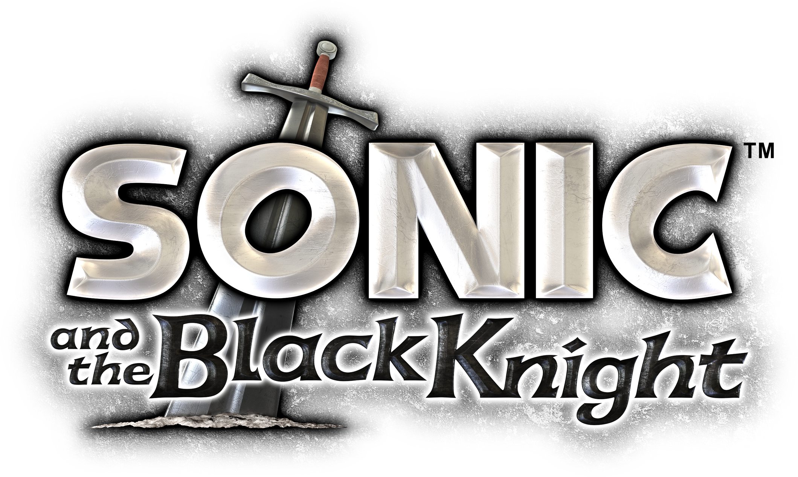
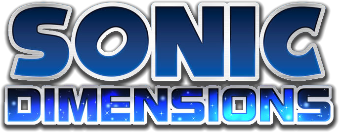
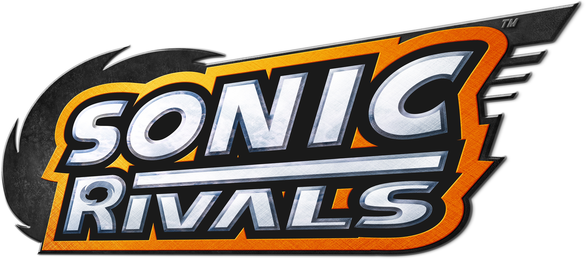
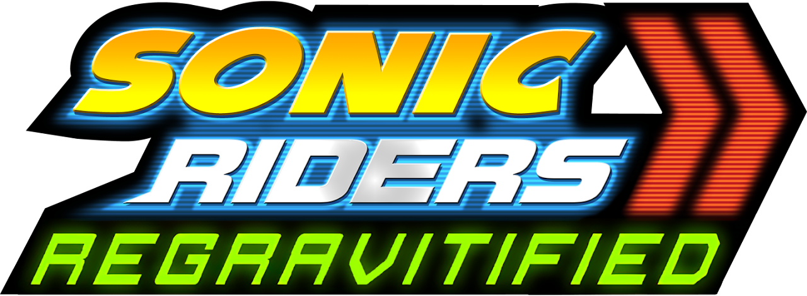

Durante a era clássica, diversos jogos da franquia foram lançados, mas não tiveram tanto destaque assim. Mas isso não quer dizer que a qualidade desses jogos é inferior aos jogos principais! Essa página mostra a melhor forma de jogar esses jogos, além de mostrar jogos criados por fãs que tentam simular o estilo desses jogos.
Sonic Riders DX é um mod para Sonic Riders de Gamecube que rebalancia o jogo e adiciona novos personagens. É necessário ter uma cópia da versão de Gamecube do jogo com o formato ".iso"
Página do jogo
Instruções de instalação:
1.) Executar "Sewer56.Patcher.Riders.exe".
2.) Clique em "Elevate our Experience!" e depois em "OK".
3.) Selecione o arquivo ".iso" do Sonic Riders que você possui.
4.) Seperar até o programa criar o arquivo modificado.

Chao Garden Island é um jogo "2.5D" focado no Chao Garden, com diversas frutas, minigames, personagens e Chaos!

Uma hack que altera o posicionamento de inimigos e altera os níveis para diminuir situações onde o jogador não tem tempo para reagir.
Descompacte o zip. Para aplicar o patch vá a página Rom Patcher JS, clique em "ROM file:" e selecione o arquivo do jogo, logo após clique em "Patch file:" e selecione o arquivo IPS que você baixou. Depois disso, clique em "Apply patch" para baixar o arquivo final e rode-o em um emulador de sua escolha

Versão americana https://gamebanana.com/mods/491825 altera os níveis para diminuir situações onde o jogador não tem tempo para reagir, além de diminuir a quantidade de medalhas para entrar no Special Stage.
Descompacte o zip. Para aplicar o patch vá a página Rom Patcher JS, clique em "ROM file:" e selecione o arquivo do jogo, logo após clique em "Patch file:" e selecione o arquivo IPS que você baixou. Depois disso, clique em "Apply patch" para baixar o arquivo final e rode-o em um emulador de sua escolha

Sonic World DX é um jogo que tenta simular as físicas da série Adventure, com diversos personagens, fases, e até um Chao Garden!
Baixe a versão 1.2.4, e o hotpatch 1.2.7, extraia os dois arquivos e coloque os arquivos do hotpatch na pasta da versão 1.2.4 e substitua os arquivos se pedidos.